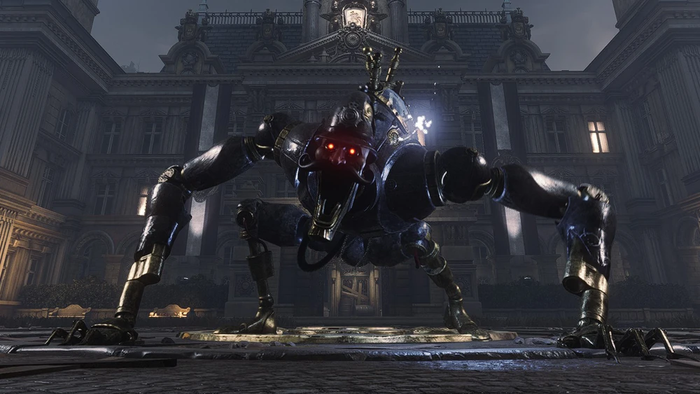

Scrapped Watchman
The Mad Police Puppet
A decommissioned police puppet left to rot in the Krat City Hall courtyard. Driven mad by the Puppet Frenzy, it now aggressively "protects" its territory using devastating electrical attacks and erratic, delayed swings.
Combat Tips
His arm swings have a massive delay. Don't dodge or parry immediately; wait for his arms to actually snap downward. In Phase 2, watch out for the puddles of lightning that form after his strikes. If he winds up his right arm and glows red, run backward immediately to avoid his unblockable grab.
Combat Stats
- Type: Puppet
- Weakness: Acid & Fire
- Resistance: Electric Blitz
- Location: Krat City Hall Courtyard
- Summon: Specter highly recommended for distraction
- Drop: Broken Hero's Ergo